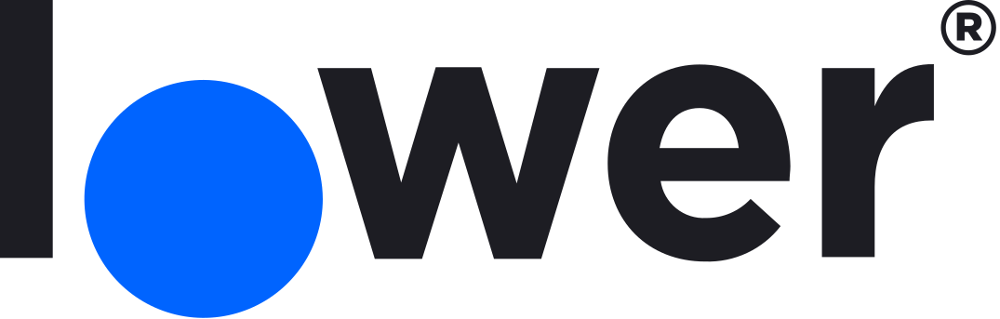
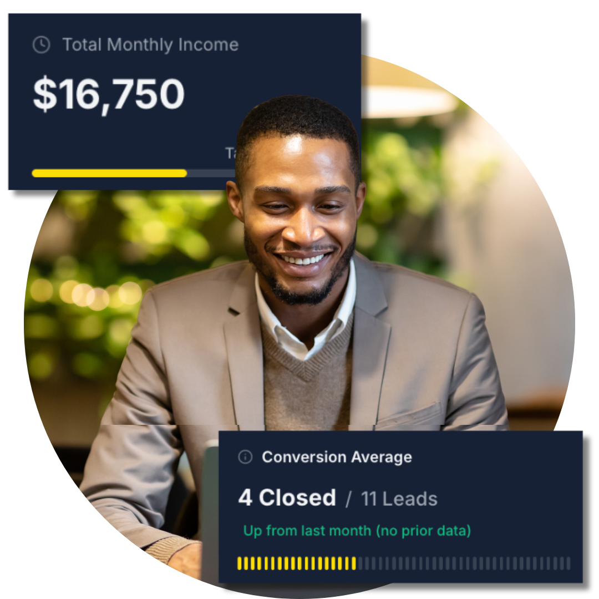

A Clear View of the Gap
We'll talk through why production varies so much across a team — the systems top producers rely on that the rest of the roster doesn't — so you can see where the real opportunity sits.
A free strategy session for mortgage leaders. We'll show you exactly where production is leaking across your roster — and how to make your best originators' playbook the standard for the whole team.
No cost · No obligation
For leaders & teams · Video call · No cost, no obligation
Trusted by top producing teams and enterprises across the country.

Pick a slot that works for your leadership team. Select a day and time from the calendar above — bring whoever owns production and growth.
Walk us through your roster, your current tooling, and how production breaks down across your originators. No prep work required — just show up.
We map the gap between your top producers and the rest of the team — the inconsistencies, the broken handoffs, and the systems your best LOs use that no one else has.
A prioritized plan for standardizing your top performers' playbook across the whole roster. Keep it whether you bring The Loan Atlas to your team or not.

Your best originator and your worst originator work in the same market. The gap between them is rarely a talent problem — it's a system problem. This call is a straightforward conversation about that gap and how The Loan Atlas helps teams close it.
We'll talk through why production varies so much across a team — the systems top producers rely on that the rest of the roster doesn't — so you can see where the real opportunity sits.
A clear picture of how The Loan Atlas rolls out across a roster — how teams get onto one shared system and what bringing it to your originators actually looks like.
A walkthrough of the platform built for teams — the AI systems, coaching, and frameworks your originators get access to, so you can judge the fit for yourself.
I love the depth of knowledge. There are a lot of things that just skim the surface, but you get training from people who are at the top of their game and get real one-on-one time with them. That implementation piece is huge.
Our top producers were running on systems no one else had. Getting the whole team on one playbook is the difference — the middle of our roster finally has something to follow instead of figuring it out alone.
One short call with your leadership. Walk away with a clear understanding of what's holding your team back and a plan to make your top producers' playbook the standard.